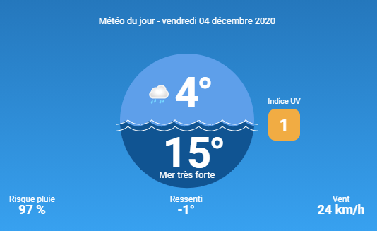

Plage de Biscarrosse :
La plage de Biscarrosse se situe dans le bassin d’Arcachon. Ce spot est idéal pour les surfeurs confirmés. Il comporte des vagues en tube, longues et rondes de 1m à 1m20. Cependant les vagues sont puissantes et baïnes y sont présentes. Biscarrosse est donc un spot pour les surfeurs confirmés. Le meilleur moment pour surfer est avant 11h, pour avoir les meilleures vagues sans qu’il y ai trop de monde.
Meteo à la plage de Biscarrosse :
Informations sur les caracteristiques de la plage :
Pour la toxicité aujourd'hui elle est de : 0,5 UTa
Pour les fond marin aujourd'hui elle est de : 14 m
Pour la houle aujourd'hui elle vien du : N
Pour la marée aujourd'hui elle est : haute à 13h35